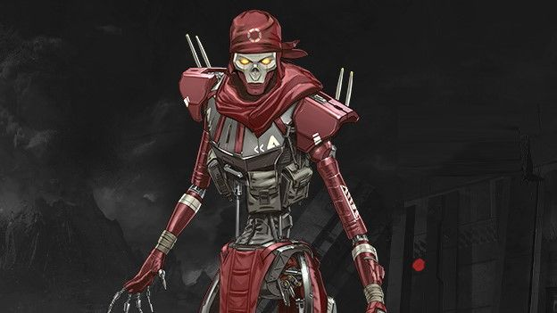
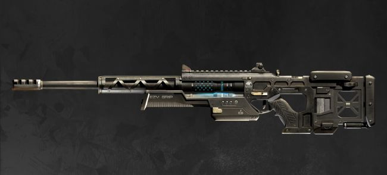

Latest Updates!!

New Legend
- Low Profile Revenant takes +5% damage.
- Passive Stalker: You crouch walk faster and can climb higher up walls
- TacticalSilence: Throw a device that deals damage and disables enemy abilities for 10 seconds.
- Ultimate Death Totem: Drop a totem that protects users from death. Instead of getting killed or downed, you will return to the totem [with 1 health].

New weapon: Sentinel Sniper Rifle
- Bolt action sniper rifle.
- Medium to long range.
- Does massive damage to shields while energized (consume a shield battery while equipped to energize.
- Unique VFX trails and SFX while energized.

Map update: World's Edge
- Multi-level Planet Harvester at the map's center
- Capitol City has been split into Fragment East and Fragment West
- Lava fissures and updrafts - you'll take damage for falling into the fissure then be carried back to map level on a updraft though other players can shoot at you as you float upward
- Weapon racks - Guaranteed weapon spawns in the Survey Camp as an alternative to a hotter drop spot